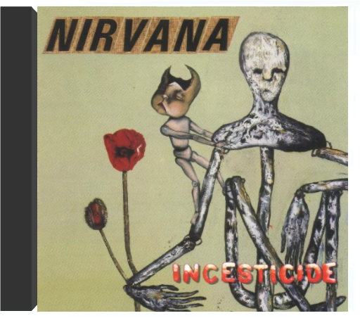
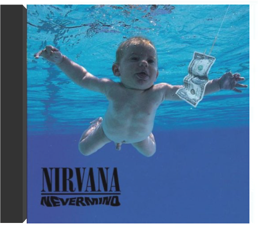
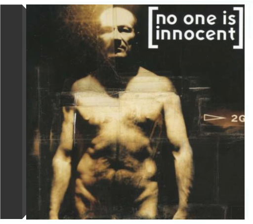
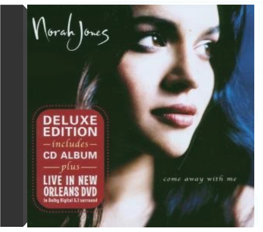

afro latin soul volume 2mulatu astatke afro latin soul volume 2mulatu astatke  (Volume Two) First official vinyl reissue of groundbreaking 1966 albums from the 'Godfather of Ethiopian Jazz'. A blend of New York Latin & Ethiopian Afro-funk grooves.  unplugged in new yorknirvana unplugged in new yorknirvana A voir Kurt Cobain assis, parmi des fleurs blanches, une guitare folk sur les genoux, on pourrait croire que ses démons s'étaient calmés. En fait, c'est l'inverse : dans ce contexte paisible, alors que le chaos électrique a fait place à un accordéon et à un violoncelle, chacun de ses mots touche et bouleverse. Sa voix déchirée sur "All Apologies", ses lamentations sur la reprise du "Where Did You Sleep Last Night" de Leadbelly transpercent le coeur de l'auditeur, plus profondément que les hurlements de "Smells Like Teen Spirit". Cobain en avait assez de Nirvana, disait-on à l'époque, et il se rapprochait de Peter Buck et de Michael Stipe de REM. Ce disque live dépouillé à l'extrême nous donne une indication de ses dernières envies musicales et rend nos regrets plus amers encore. —Hubert Deshouse  in uteronirvana in uteronirvana Avec In Utero, Kurt Cobain était attendu au tournant. Comment succéder à l'incontournable Nevermind sans décevoir, alors que "Smells Like Teen Spirit" est entre temps devenu l'hymne d'une génération, l'équivalent de ce que fut "My Generation" des Who aux années 70? Kurt Cobain n'a jamais rien eu d'un messie et à cette question oiseuse, il répond par un autre brûlot illuminé par les étincelants "Heart Shaped Box" et "Rape Me". Deux bombes incendiaires à faire passer Led Zeppelin pour des enfants de chœur. Déjà, la lassitude pointe, dès les paroles du premier morceau, mais l'ensemble se révèle cinglant comme un coup de trique, sec et dépouillé par le minimalisme hardcore du producteur Steve Albini. Le disque devait s'intituler "I Hate Myself And I Want To Die". Prémonitoire ricaneront les corbeaux. Certes. Mais, attention: chef d'œuvre. —Philippe Robert incesticidenirvana Sortie après le triomphe de Nevermind, afin de donner au trio un peu de temps pour composer, cette compilation de bric et de broc alterne le meilleur et le moins bon. Si "Downer" ou "Aero Zeppelin" n'ont d'intérêt qu'historique, rappelant que Nirvana à ses débuts n'était qu'un gang punk sans originalité particulière, "Sliver", "Been A Son" ou "Aneurysm", au contraire, comptent parmi les compositions les plus accrocheuses de Kurt Cobain, et auraient pu dignement figurer sur Nevermind ou In Utero. On a également plaisir à entendre le groupe reprendre Devo ("Turnaround") ou ses chers Vaselines ("Molly's Lips", "Son Of A Gun"), qui seront encore honorés sur l'album Unplugged. Un document indispensable pour les fans. —Thierry Chatain nevermindnirvana Cet album a changé la face du rock et sans doute tué Kurt Cobain. L'ange à l'oeil trop clair et aux cheveux filasses n'était certainement pas assez solide pour supporter la charge d'une gloire planétaire aussi méritée qu'inconcevable. On ne comprendra jamais pourquoi cette alchimie complexe força les portes de millions de foyers réfractaires aux musiques dures, mais la qualité de tous ses ingrédients n'aura échappé à personne. Au-delà de l'effet "Smells Like Teen Spirit", on soulignera la production nickelée de Butch Vig, la puissance de mélodies filigranées et l'apport considérable du batteur Dave Grohl au monde déchiqueté et pessimiste de Kurt. Entre mélancolie hypocondriaque et guitares d'assaut, le mouvement grunge trouva en Nevermind ses principales (voire uniques) lettres de noblesse. Le meilleur digest possible des années quatre-vingt-dix : indispensable. —Jean-Luc Manet no one is innocentno one is innocent Si No One Is Innocent fut initialement accueilli avec une méfiance bien légitime, il fallut néanmoins rapidement se rendre à l'évidence et admettre que le groupe ne se réduisait pas à une simple "réplique française" de Rage Against The Machine. De "La Peau" à "Ne reste-t-il que la guerre pour tuer le silence" en passant par "Genocide" et "Le Feu", No One Is Innocent aligne une impressionnante série de refrains mémorables enluminant des morceaux fichtrement efficaces. Alternant titres en français et en anglais (avec un accent à couper au couteau), No One Is Innocent fait preuve d'une étonnante maturité qu'il consolidera encore sur Utopia, son second album, fondamentalement différent du premier et pourtant tout aussi captivant. Pendant ce temps, en coulisses, Lofofora et Silmarils affûtaient leurs armes. La relève était assurée. —Hervé SK Guégano come away with menorah jones Avec ce premier album, Norah Jones s'impose comme une chanteuse charismatique, digne héritière des aînées Carole King, Rickie Lee Jones, Joni Mitchell et Laura Nyro. Comme ces deux dernières, la jeune Américaine ne veut rien se refuser : entre le jazz (le disque est édité par le label Blue Note), la pop, voire le folk ou la country, elle ne choisit pas, préférant varier les ambiances sans que la cohérence de l'ensemble soit jamais entamée. Pour venir à bout de cette tâche délicate, pas moins de deux producteurs ont été nécessaires. Craig Street apporte son expérience acquise aux côtés d'artistes singuliers (Joe Henry, Cassandra Wilson, Me'Shell Ndegeocello) tandis que Arif Mardin, producteur des œuvres d'Aretha Franklin sur Atlantic, apporte en matière d'arrangements la touche nécessaire à la concrétisation des idées de la chanteuse. Bien qu'il ne s'agisse que de son premier opus, Norah Jones jouissait déjà d'une certaine réputation due à sa participation à l'un des disques du guitariste Charlie Hunter où, en reprenant Nick Drake et Roxy Music, elle révélait toute l'étendue de ses influences. Autour d'un groupe soudé, quelques invités, dont le batteur Brian Blade et le guitariste Bill Frisell, sont venus prêter main-forte. Ce qui domine sur Come Away With Me, c'est la maturité d'un sacré tempérament d'emblée affichée. Et, surtout, une totale authenticité. —Hervé Comte |


 Made with Delicious Library
Made with Delicious LibraryNancy, State zipflap congrotus delicious library Thomas, Julien